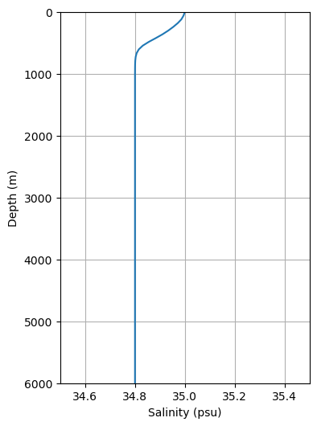

NeverWorld2 初始状态与边界条件
# Initial condition
# Ocean
# Temperature
The initial temperature is a function of both latitude (ϕ, in radians) and ocean depth (z, in meters). The surface temperature SST∗(ϕ) is defined as a piecewise cubic function that interpolates between the values (y) -1.033, 28.3, and -30°C at latitudes (ϕ) -67.803, -2.803, and 137.197, respectively. The initial temperature is defined as a function of the surface temperature and depth, T∗(z,ϕ), which is defined as
T∗(z,ϕ)=16−12⋅tanh(700z−400)⋅21−tanh(150500−z)⋅0.751−(75ϕ)2+(15⋅(1−tanh(1500z−50))−1.4⋅tanh(100z−100)+15007⋅(1500−z))⋅23.5SST∗(ϕ)⋅21−tanh(150z−500).
where SST∗(ϕ) is the surface temperature defined above.
# Salinity
The initial salinity is uniform at each layer and defined as a function of depth, S∗(z), which is defined as
S∗(z)=34.8+(0.55+1.2550005000−z−1.62tanh(650z−60)+0.2tanh(100z−35)+0.2tanh(5000z−1000))⋅1.840.2⋅21−tanh(150z−500).

# Ice
There is no ice in the initial condition.
# Surface boundary condition
# Ocean
# Wind stress
The wind stress is purely zonal. We construct the wind stress from piecewise cubic functions that interpolate between the values (y) -0.05, 0.2, -0.1, -0.02, -0.1, 0.1, and 0 Pa at latitudes (ϕ) -75, -45, -15, 0, 15, 45, and 70, respectively.
Then we add a seasonal cycle to the wind stress, which are
ϕt=ϕ+3cos(2πt−0.79), where t is the time in years (normalized between 0 and 1 within the year) and yt=y/144∗(cos(2πt−0.79)+12)2
# Heat flux
The thermodynamic forcing also follows a meridional structure and is enforced on the model’s surface through a restoring condition to the predefined annual cycle of apparent temperature, SSTf , defined as a piecewise cubic function that interpolates between the values (y) -3, 28.3 and -30°C (corresponding index are i=1,2,3) at latitudes (ϕ) -65, 0 and 140, respectively.
Seasonal variations are added, which are
ϕt=ϕ+3cos(2π(t−0.558)) and
yt={y−0.5cos(2π(t−0.558)),i=1y,elsewhere
Total surface heat flux (i.e., Qtot, split into solar part Qsr and non-solar part Qns, both in Wm−2) is in proportion to SSTf−SST, with SST the model’s instantaneous surface temperature. Qtot is defined in
Qtot(ϕ,t)=−40⋅(SSTf(ϕ,t)−SST(ϕ,t))=Qsr(ϕ,t)+Qns(ϕ,t)
where
Qsr(ϕ,t)=max(230⋅cos(0.019⋅ϕ−0.447⋅cos(2π(t−0.475))),0)
# Evaporation minus precipitation (EMP) flux
The EMP flux is purely zonal. We construct the EMP flux from piecewise cubic functions that interpolate between the values (y) 0, -0.5, 1.1095246481, -1.2, 1, -0.5, and 0 Kg/m2/s/(3.16∗10−5) at latitudes (ϕ) -75, -55, -20, 5, 30, 50, and 80, respectively.
Then we add a seasonal cycle to the EMP flux, which is
y=y∗(1−cos(2π(t−0.475))/8).
# Ice
# Wind stress
Set as the same as ocean.
# Heat flux
SSTf is set as -1.9°C on the ice, still compare to model’s instantaneous surface temperature. Qtot, Qns and Qsr are set according to the same formula as ocean.
# Evaporation minus precipitation (EMP) flux
Set as the same as ocean. But Qemp is set as 0 on the ice.
# Others
Snow precip and ice sublimation are set as 0 on the ice.